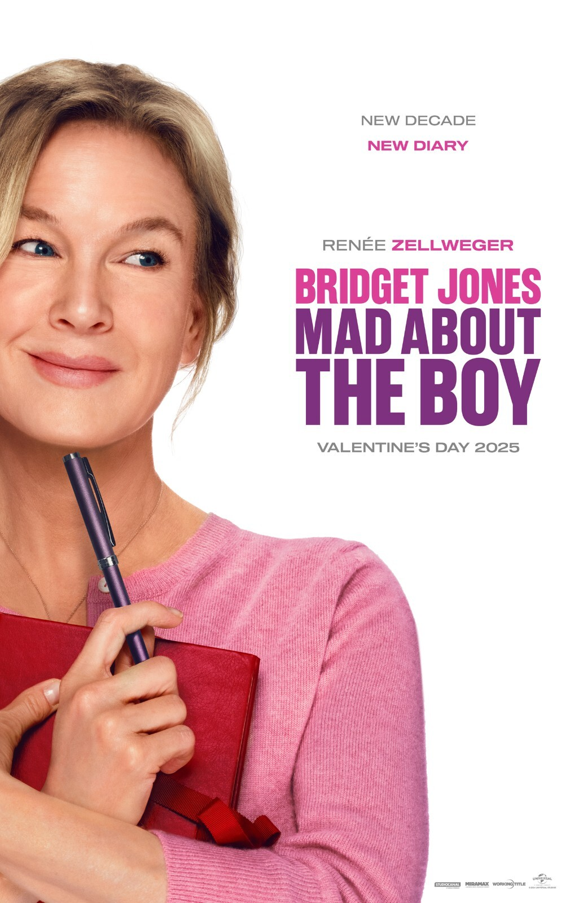

Följer Bridget Jones flera år efter händelserna i de tidigare filmerna. Hon har nu passerat 50-årsåldern och lever ett helt annat liv än tidigare. Efter att hennes stora kärlek Mark Darcy gått bort har Bridget blivit ensamstående mamma till deras två barn, Billy och Mabel. Hon försöker balansera föräldraskapet med arbetet och vardagens alla utmaningar, samtidigt som hon fortfarande sörjer förlusten av Mark.
Bridget har under en lång tid lagt kärlekslivet åt sidan för att fokusera på sina barn och försöka få vardagen att fungera. Hennes vänner och familj uppmuntrar henne dock att börja leva igen och inte fastna i sorgen. Till slut bestämmer hon sig för att våga öppna upp för kärleken på nytt. Hon skapar en profil på en dejtingapp och börjar träffa en yngre man, Roxster, som hon snabbt blir attraherad av.
Deras relation utvecklas och Bridget får återigen uppleva spänningen och osäkerheten som kommer med att vara nyförälskad. Samtidigt känner hon sig osäker på åldersskillnaden mellan dem och funderar över hur omgivningen ska reagera på deras förhållande.
Utöver kärlekslivet måste Bridget också hantera utmaningarna med att vara förälder. Hantera den störigt strikta läraren på barnens skola, Mr. Wallaker. Skolans överpresterande mammor och hur man tar sig tillbaka till arbetet efter en lång paus.
När Bridget försöker hitta tillbaka till sig själv ställs hon inför flera känslomässiga utmaningar. Hon måste lära sig att släppa taget om det förflutna utan att glömma Mark, samtidigt som hon försöker förstå vad hon själv vill ha av framtiden. Relationen med Roxster blir inte heller helt problemfri, men hon verkar ha mer gemensamt med den störiga Mr. Wallaker än vad hon en gång trott.
Filmen handlar framför allt om sorg, kärlek, föräldraskap och att våga börja om på nytt, även när livet inte blivit som man tänkt sig. Den visar att det aldrig är för sent att hitta kärleken igen och att man kan bära med sig minnet av någon man älskat samtidigt som man tillåter sig själv att gå vidare.